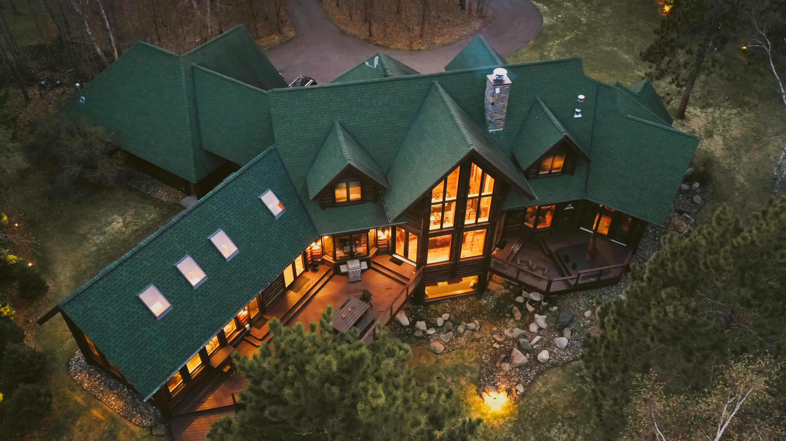
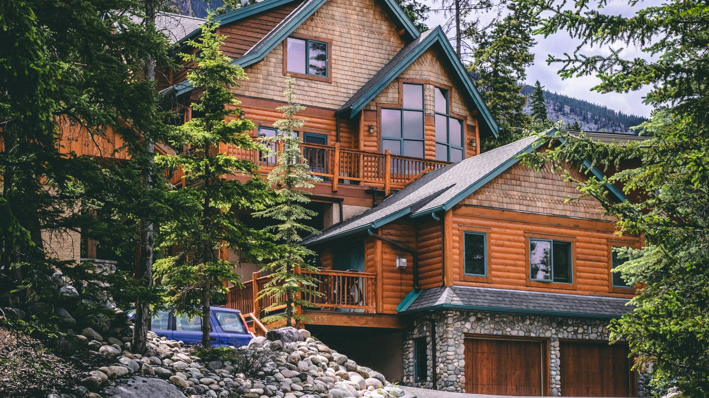
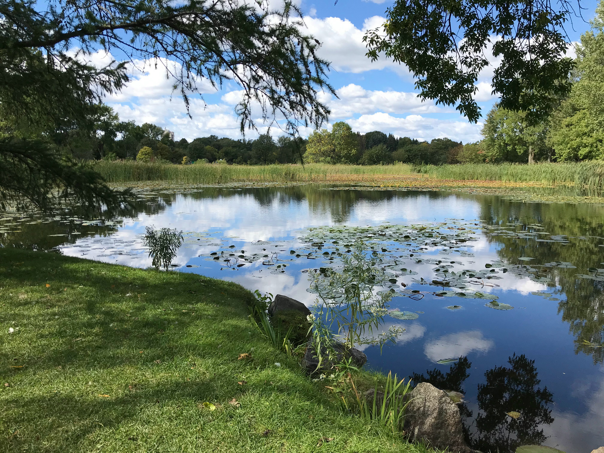
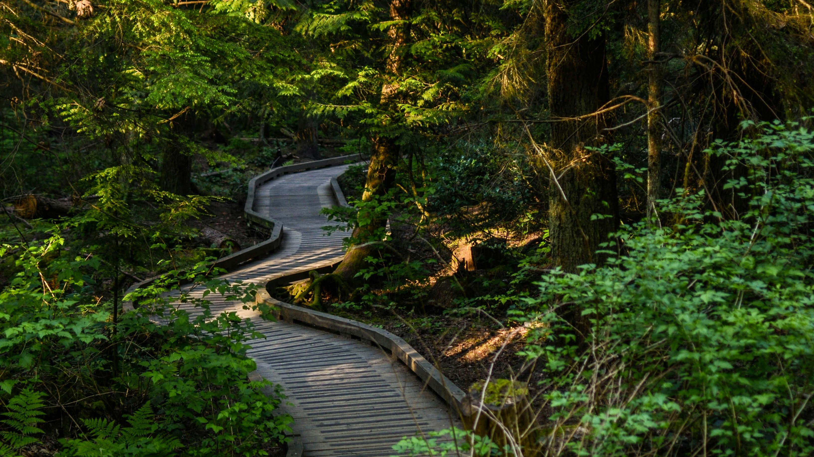
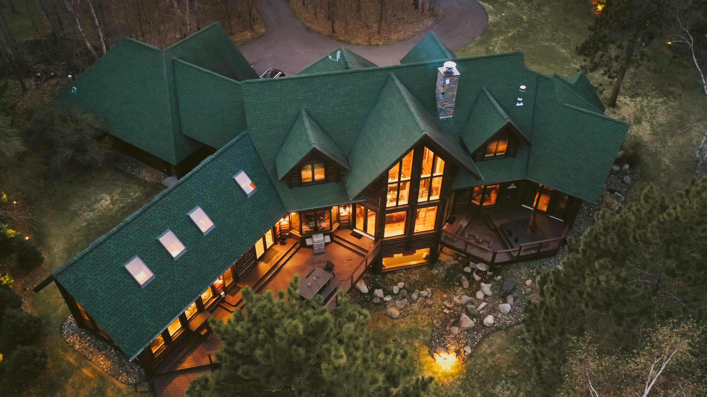
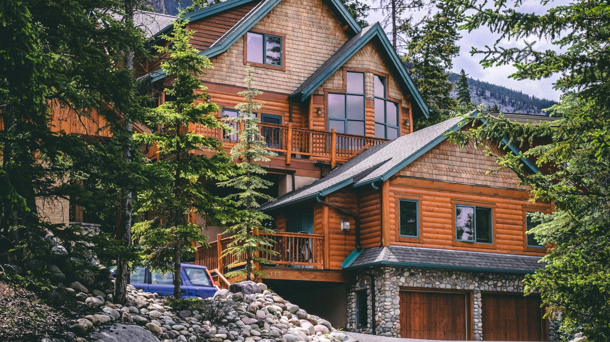
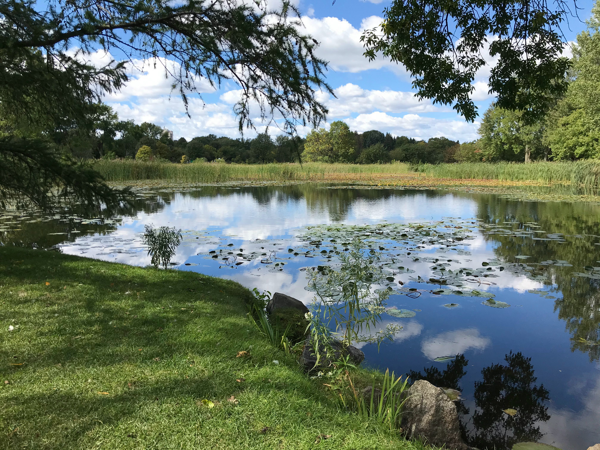
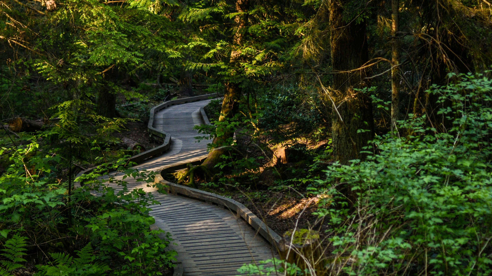
Though we have grown as a Bed and Breakfast place, we did have very humble beginnings. Harry Doppelganger came to the US with his parents who owned their first Bed and Breakfast in 1980. Starting in Erie, PA, we started off as a very small three bedroom home surrounded by a local park and town houses. This soon expanded to other cities such as in Erie, Pa, Conneaut Lake, OH, and Put-in-Bay, OH. Harry happily runs this Bed and Breakfast with his wife Frances, and their two daugters, Faith and Emma. However, Harry still holds the same values as he did then, to make his guests as happy and comfortable as possible. Because you deserve it!
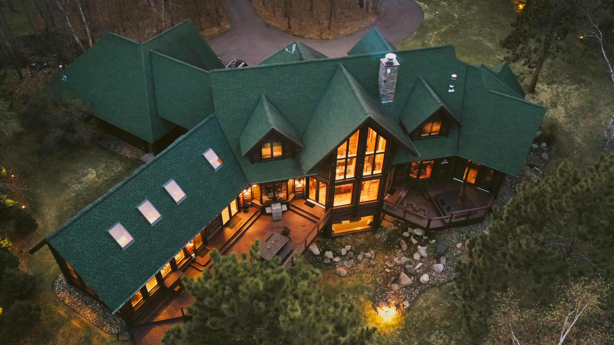
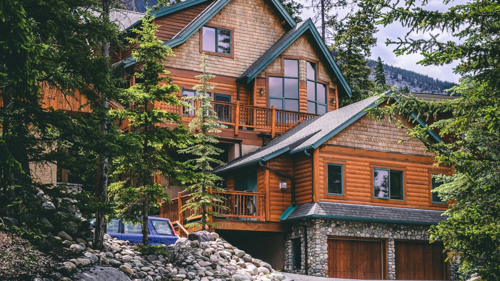
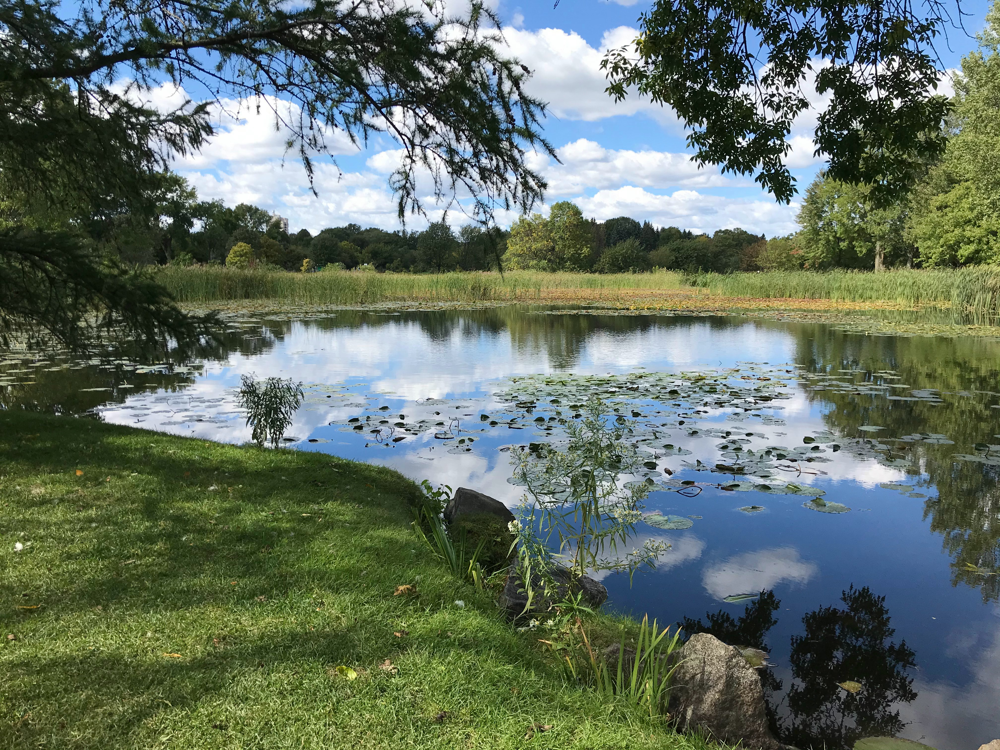
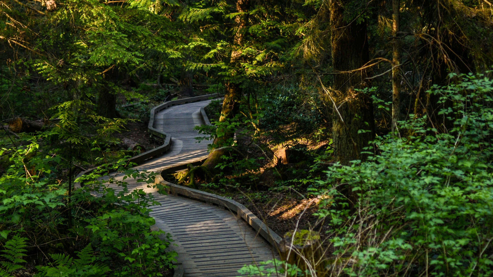
With that being said, we have many of locations, such as in: Erie, PA; Conneaut Lake, OH; and Put-in-Bay, OH. All of our cozy cabins features the same qualities, however with different activities depending on the local town near it. Some may have biking trails, mountain climbing, and maybe even scuba diving activities. We encourage our guests to explore our various locations and see which one you like best.